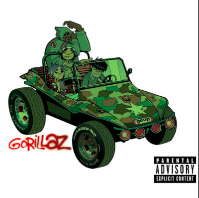
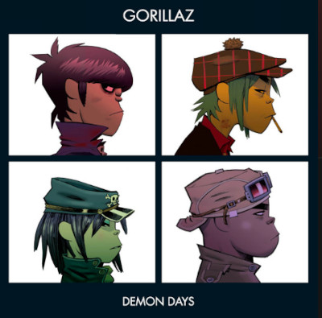
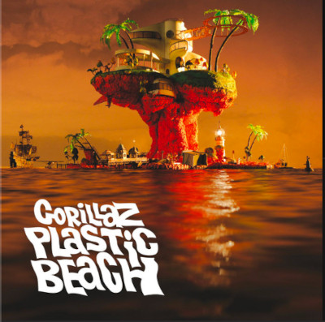
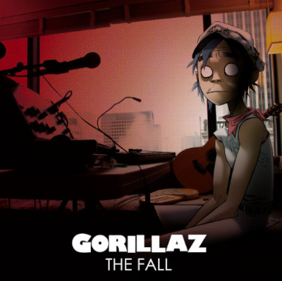
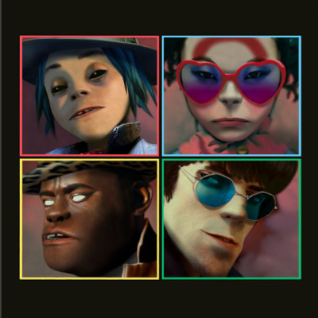
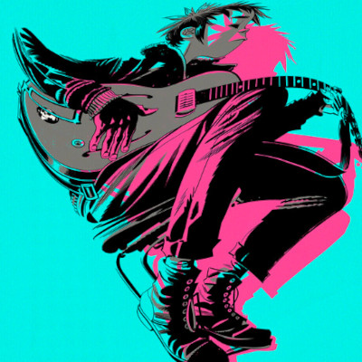

Gli album
La discografia dei Gorillaz consiste in sei album in studio, oltre venti singoli, quattro EP, tre raccolte e un album di remix.

Gorillaz
Composto da 15 brani (più una traccia fantasma che altro non è che un remix del singolo Clint Eastwood), lo stile è largamente considerabile come alternativo, non mancando numerose influenze come hip hop, pop ed elettronica, oltre che brani che toccano il dub e il funk.

Demon Days
La principale fonte d'ispirazione per l'album è nata in conseguenza a un viaggio in treno che Damon Albarn ha compiuto da Pechino fino alla Mongolia, dove lui (insieme alla partner e alla figlia, all'epoca di sei anni) ha trascorso un'intera giornata di viaggio in cui ha potuto vedere «una parte dimenticata della Cina.

Plastic Beach
L'album presenta sedici brani che hanno visto la partecipazione di svariati artisti quali Snoop Dogg, Gruff Rhys, Bobby Womack, Mos Def, Lou Reed, Mick Jones e i De La Soul. Le canzoni parlano di temi come il consumismo e l'ecologia.

The Fall
L'album è stato interamente registrato sull'iPad del cofondatore del gruppo Damon Albarn durante le tappe americane del tour di supporto a Plastic Beach nel mese di ottobre 2010.

Humanz
Humanz è il quinto album in studio del gruppo musicale, pubblicato il 28 aprile 2017 dalla Parlophone dopo una luna pausa.

The Now Now
The Now Now è il sesto album in studio del gruppo musicale britannico Gorillaz, pubblicato il 29 giugno 2018 dalla Parlophone.